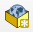
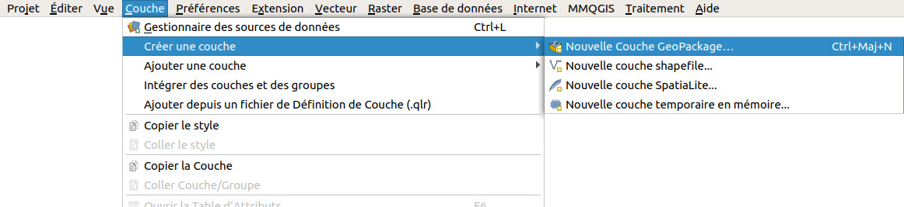

V. Numérisation
V.1 Création d'une couche vide
Le but va être ici, à partir d'une carte déjà géoréférencée, de créer une couche de points qui contiendra les écoles et les postes de l'île d'Oahu. On passera donc d'une couche raster (la carte) à une couche vecteur contenant une partie des informations de la carte.
Ci-dessous, à gauche, la carte originale, et à droite, la carte avec par-dessus la couche vecteur contenant les bâtiments.
{kind=link}
Il sera ensuite plus facile de manipuler des données vecteurs, pour par exemple visualiser la répartition spatiale des écoles, et si on a numérisé également les routes travailler sur l'accessibilité des ces écoles...
Ces écoles et postes sont représentées dans la carte sous forme de points bleus ou rouges :
Création d'une couche vide
La première étape consiste à créer une couche vierge, qui accueillera les données que nous allons créer.
Dans QGIS, ouvrez un nouveau projet.
Rendez-vous dans le Menu Couche → Créer une couche → Nouvelle couche GeoPackage...  ou bien cliquez sur l'icône correspondante (vous pouvez aussi utiliser le raccourci clavier Ctrl+Maj+N).
La fenêtre suivante apparaît :
{kind=link}
- Base de données : un fichier GeoPackage étant en réalité une base de données, il s'agit ici de dire quelle base sera utilisée, existante ou non. Nous considérerons ici que un fichier GeoPackage = une couche, et nous allons donc créer une nouvelle base que nous utiliserons de la même manière qu'un fichier shapefile (sans utiliser la possibilité offerte par ce format de stocker plusieurs couches dans un seul fichier) : cliquer sur le bouton ... et spécifiez le nom et l'emplacement de la couche qui sera créée
- Nom de la table : ce champ est rempli automatiquement en fonction du nom spécifié ci-dessus
- Type de géométrie : Point
- SCR : afin que cette couche soit dans le même système que la carte, vérifier que le SCR soit bien le WGS84
La partie suivante de la fenêtre va nous permettre de spécifier les colonnes qui seront présentes dans la table attributaire. Il sera toujours possible par la suite de supprimer ou d'ajouter de nouvelles colonnes.
- Nom : tapez type : un champ nommé type contiendra les valeurs école ou poste
- Type : choisissez Donnée texte car ce champ contiendra du texte et non des nombres
- Longueur maximale : pour un champ de type texte, ceci correspond au nombre maximum de caractères que pourra contenir le champ. Les mot "école" et "poste" comportent tous deux 5 caractères : une largeur de 5 suffirait ici. Pour avoir un peu de marge (supposons que l'on veuille par la suite ajouter un 3ème type de bâtiment), choisissons une largeur de 10.
- cliquez sur le bouton Ajouter à la liste des champs...
...Et enfin sur OK.
La couche est automatiquement ajoutée à QGIS.
Vérification
Allez dans les propriétés de la couche, rubrique Information :
{kind=link}
Vous pouvez vérifier ici l'emplacement de votre couche (chemin), son SCR, le nombre d'entités qu'elle contient (à ce stade, 0).
Ouvrez la table attributaire :
{kind=link}
Cette table ne contient aucune ligne, ce qui est normal car la couche ne contient aucune entité.
Par contre, elle contient 2 champs, fid et type, alors qu'on se serait attendu à ne voir que le champ type.
A quoi correspond ce champ fid ? Le GeoPackage étant une base de données, une colonne d'identifiant unique (clé primaire) est créée automatiquement lors de la création de la couche, afin d'identifier de manière unique chaque entité.
Cette colonne sera remplie automatiquement, mais néanmoins modifiable par l'utilisateur (vous !). Si 2 entités ont la même valeur pour ce champ fid, un message d'erreur sera affiché et il ne sera pas possible d'enregistrer les modifications. Le plus simple est donc de laisser le logiciel gérer ce champ.
Dans le chapitre suivant, nous allons ajouter des points à cette couche.
chapitre précédent chapitre suivant
haut de page